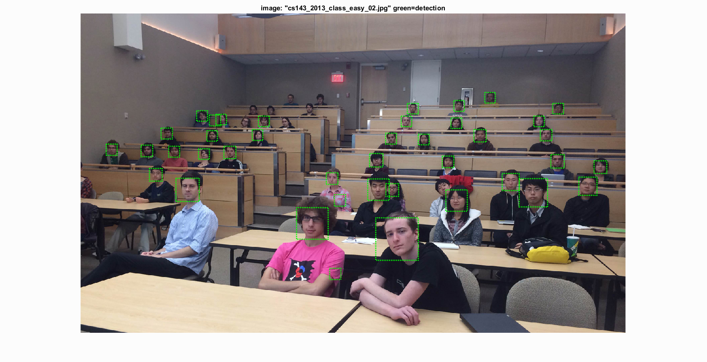

COMP5421 / Project 2 / Face Detection
Overview
In this project we implement a face detection program using SIFT-like Histogram of Gradients(HoG) based on Triggs's paper.
We also test on some picture preprocessing techniques and extra positive training sets for better performance. Details are explained below.
The whole program mainly consists of the following steps.
- Extract Histogram of Oriented Gradient(HOG) features from positive samples.
- Extract Histogram of Oriented Gradient(HOG) features from random negative samples.
- Train a Linear SVM classifer based on both positive and negative samples using vl_svmtrain.
- (Extra credit) Hard negative mining, details are explained below.
- Detect test dataset with multiple scale sliding windows, determing whether each window contains a face or not.
- Generate a bounding box with confidence threshold.
- Compute ROC, precision-recall curve and average precision.
Train Linear SVM
We have extracted 6713 positive features (faces) from Caltech Web Faces dataset and extracted in total 50000 random negative features (non-faces) from SUN dataset.
We use linear SVM (vl_svmtrain) with regularization parameter (lambda) as 0.0001 to obtain a linear classifier.
Multi-Scaling and Step Size
We used multiple scale sliding windows (0.05:1.2:0.05) to detect images.
To evaluate the effects of different steps(HoG cell size) on test results, method of control variates are used.
The following results are obtained with HoG_Template_Size=36, Confidence_Threshold=-0.5.
| Hog Cell Size |
Cell Size = 6 |
Cell Size = 4 |
Cell Size = 3 |
| HoG |
|
|
|
| Average Precision |
|
|
|
| Recall(Viola Jones) |
 |
 |
 |
| Sample Result |
 |
|
|
It turns out that the detection results become better as HoG cell size gets smaller. However, the total running time also increases dramatically. It is safe to conclude that there exists a tradeoff between average precision and running time.
Extra Credit: Hard Negative Mining
To refine our classifier, we implement the method of hard negative mining, which includes the following steps:
- ......previous steps to obtain the initial SVM.
- Test the SVM on negative samples dataset we used in the previous step.
- Since there should be no faces in the negative dataset, any detection of faces (confidence above certain threshold) should be false positive and will be recorded.
- Add the recorded new negative features to the old negative feature set.
- Retrain the SVM using old positive feature set and new nageative feature set.
- The enhanced SVM is obtained.
The following results show the improvements hard negative mining has on the SVM.
(HoG_Template_Size=36, HoG_Cell_Size=3, Confidence_Threshold=-0.5)
|
Hard Negative Mining=OFF |
Hard Negative Mining=ON |
| Average Precision |
|
|
| Recall(Viola Jones) |
|
 |
| Sample Result |
|
|
Hard negative mining does improve the performance a little bit. However, it also increase the training time.
Extra Credit: Alternative Positive Training Data
We search for extra face dataset and find Labeled Faces in the Wild(LFW) dataset from UMASS. We select around 8000 extra face images and resize them to 36*36, then mix up with the caltech faces dataset. Finally, we divided the dataset into two new datasets with each contains around 10000 faces images. The results below illustrates performance of each datasets.
(HoG_Template_Size=36, HoG_Cell_Size=3, Confidence_Threshold=-0.5, HNM=OFF)
|
NewFaceSet |
NewFaceSet2 |
| HoG |
|
|
| Average Precision |
|
|
| Recall(Viola Jones) |
 |
 |
| Sample Result |
|
|
In general, our NewFaceSet2 performes better than NewFaceSet. After rough inspection of these two dataset, we find that NewFaceSet contains many pictures that are the same face but from different directions, that is probably why the HoG image of NewFaceSet is not so face-like.
Extra Credit: Interesting Features
In search for better recognition, we look into faces that can not be detected and apply different image augmentaion skills including:
- When doing multiple scale window detection, apply contrast stretching to each extracted windows before computing HoG.
Reason: We find that many undetected faces are not equally illuminated, may result in false negative.
- When extracting positive samples, flip each image to get a new positive sample and add it to the positive features.
Reason: Some false negative are due to different directions of faces, some face even turn up side down.
- When extracting negative samples, downsize image with multiple scales before extracting.
Reason: This is suggested in the comment, however, we believe random negatives should be good enough.
Unfortunately, none of the techniques mentioned above have noticeable improvement on the recognition result.
(HoG_Template_Size=36, HoG_Cell_Size=3, Confidence_Threshold=-0.5, HNM=OFF)
|
Contrast Stretching |
Flipped Face |
Downsize Negative Samples |
| Average Precision |
|
|
|
Best Performance
The best average precision we obtain is 0.937, under the following conditions:
HoG_Template_Size=36, HoG_Cell_Size=3, Confidence_Threshold=-1.1, HNM=ON
|
HoG |
Average Precision |
Recall(Viola Jones) |
Sample Results |
| Best Performance |
|
|
 |
|
However, due to the relativly low confidence threshold, there are many false positives.
Test Result on Extra Test Scenes
HoG_Template_Size=36, HoG_Cell_Size=3, Confidence_Threshold=0.95, HNM=ON

The END